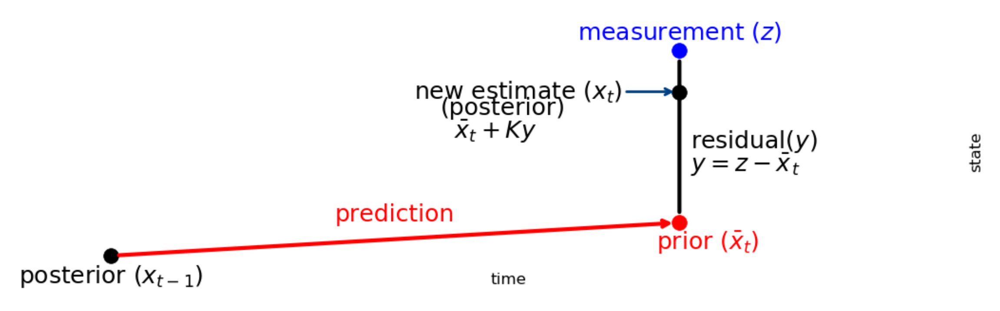

Kalman Filter
卡尔曼滤波综述
卡尔曼滤波尤其适合动态系统。它对于内存要求极低（它仅需要保留系统上一个状态的数据，而不是一段跨度很长的历史数据）。并且它运算很快，这使得它非常适合解决实时问题和应用于嵌入式系统。
g-h Filter
当测量数据有噪声时，我们需要根据先验知识和实验测量值的信息来对其真实值进行有效估计
g-h滤波器通过两个因子来进行真实值的有效估计，g因子用于修正当前测量值和预测值之间的差异，h因子用于修正当前估计变化率和真实变化率之间的差异，在这个模型中当前步下的估计值由当前步下的预测值和当前步下的测量值决定，而当前步下的预测值由上一步下的估计值和估计变化率所决定，具体可以表示如下: \[ \begin{array}{l} \hat{x}_t = x_{t}^{\rm pred} + g (x_{t}^{\rm measure} - x_{t}^{\rm pred}) \\ \hat{\dot{x}}_t = \hat{\dot{x}}_{t-1} + h \frac{(x_{t}^{\rm measure} - x_{t}^{\rm pred})}{\Delta t} \end{array} \]
其中\(\hat{x}_t\), \(\hat{\dot{x} }_t\)分别为当前步下的预测值和估计变化率，\(x_{t}^{\rm pred}\)由上一步决定: \[ x_{t}^{\rm pred} = \hat{x}_{t-1} + \hat{\dot{x}}_{t-1} \cdot \Delta t \]
通过g-h滤波可以从具有噪声的数据中融合先验提供较为准确的估计。
高斯分布
高斯分布性质
两个高斯函数的乘积仍然是高斯函数, \(g(\mu, \sigma) \sim g_1(\mu_1, \sigma_1) \cdot g_2(\mu_2, \sigma_2)\), 其中 \[ \begin{array}{l} \mu = \frac{\sigma_1^2 \mu_2 + \sigma_2^2 \mu_1}{\sigma_1^2 + \sigma_2^2} \\ \sigma^2 = \frac{\sigma_1^2 \sigma_2^2}{\sigma_1^2 + \sigma_2^2} \end{array} \]
两个高斯函数的加和后仍然是高斯函数, \(g(\mu, \sigma) \sim g_1(\mu_1, \sigma_1) + g_2(\mu_2, \sigma_2)\), 其中 \[ \begin{array}{l} \mu = \mu_1 + \mu_2 \\ \sigma^2 = \sigma_1^2 + \sigma_2^2 \end{array} \]
多维高斯分布
多维高斯分布通常由均值向量 \(\mu\) 和协方差矩阵 \(\Sigma\) 来描述 \[ \begin{array}{l} VAR(X) = \sigma _x^2 = {\mathbb E} [ { { {\left( {X - \mu } \right)}^2}} ] \\ COV(X,Y) = {\sigma _{xy}} = E\left[ {\left( {X - {\mu _x}} \right)\left( {Y - {\mu _y}} \right)} \right] \end{array} \] 协方差矩阵可以表示为 \[ \Sigma = \left[ {\begin{array}{c} {\sigma _1^2}&{ {\sigma _{12}}}& \cdots &{ {\sigma _{1n}}}\\ { {\sigma _{21}}}&{\sigma _2^2}& \cdots &{ {\sigma _{2n}}}\\ \vdots & \vdots & \ddots & \vdots \\ { {\sigma _{n1}}}&{ {\sigma _{n2}}}& \cdots &{\sigma _n^2} \end{array}} \right] \] 这里注意，协方差矩阵是对称的，总是满足 \(\sigma_{xy} = \sigma_{yx}\)
Pearson相关系数
Preson相关系数定义为 \[ \rho_{xy} = \frac{COV(X, Y)}{\sigma_{x} \sigma_{y}} \]
Pearson相关系数取值在 \(0 \sim 1\) 之间，描述了不同维度变量之间的相关性，越接近 \(1(-1)\) 表明越呈现正(负)相关，越接近 \(0\) 则表明越不相关。
多维高斯分布性质
两个多维高斯函数的乘积仍然是高斯函数，均值向量和协方差矩阵变为 \[ \begin{array}{l} \mu = \Sigma_2 (\Sigma_1 + \Sigma_2)^{-1} \mu_1 + \Sigma_1 (\Sigma_1 + \Sigma_2)^{-1} \mu_2 \\ \Sigma = \Sigma_1 (\Sigma_1 + \Sigma_2)^{-1} \Sigma_2 \end{array} \]
1D Kalman Filter
一维卡尔曼滤波
问题情景
考虑一个情景，我们要测量一只狗的位置 \(x\), 我们的传感器的测量值 \(z\) 有误差，传感器的测量结果服从高斯分布，狗的运动情况(Process Model)也存在误差，比如理论上每间隔时间\(\Delta t\)就会移动\(\Delta x\)的距离，但实际上真真实的移动位置是以\(\Delta x\)为均值的高斯分布，现在我们的问题是根据先验和传感器的测量结果预测狗的真实位置。
实际上这是一个求解后验的问题，传感器的测量值服从高斯分布，在这个问题中相当于似然函数，而我们的Process Model实际上是根据上一时刻的后验估计值来计算当前时刻的先验，后验为先验和似然的乘积，根据高斯分布的性质我们便可以得到后验的均值和方差为狗的当前位置提供合理的估计。
根据以上分析，我们要求的后验可以写为
\[ \mu = \left( {\frac{ { { {\bar \sigma }^2}}}{ { { {\bar \sigma }^2} + \sigma _z^2}}} \right){\mu _z} + \left( {\frac{ {\sigma _z^2}}{ { { {\bar \sigma }^2} + \sigma _z^2}}} \right)\bar \mu = {W_1}{\mu _z} + {W_2}\bar \mu \]
在这里 \({\bar \mu}\) 本质为先验，\(\mu_z\) 本质为似然，令 \(K=W_1\)，则 \(\mu\) 可以写为 \[ \mu = {\bar \mu} + K (\mu_z - {\bar \mu}) \] 其中 \[ K = \frac{ { { {\bar \sigma }^2}}}{ { { {\bar \sigma }^2} + \sigma _z^2}} \]
上述就是对这个一维问题的卡尔曼滤波实现，可以形象地用下面这个图来进行表示，其中权重\(K\)的引入也表明它的本质是一个 g-h 滤波器

Filterpy 代码实现
Initial state \(\mathcal{N}(10,
3)\), Movement \(\mathcal{N}(1,
4)\) 1
2
3
4
5import filterpy.kalman as kf
x, P = kf.predict(x=10., P=3., u=1., Q=2.**2)
print('%.3f' % x)
x, P = kf.update(x=x, P=P, z=12., R=3.5**2)
print('%.3f' % x, '%.3f' % P)
一维卡尔曼滤波流程
将对状态的预测值记为 \({\bar x}\)，估计值记为 \(x\)，状态方差预测值记为 \({\bar P}\)，状态方差估计值记为 \(P\), 过程噪声方差记为 \(Q\), 测量噪声方差记为 \(R\), 卡尔曼增益记为 \(K\)，则卡尔曼滤波的工作流程如下：
- Predict \[ \begin{array}{l} \bar x = x + dx\\ \bar P = P + Q \end{array} \]
- Update \[ \begin{array}{l} y = z - \bar x\\ K = \frac{ {\bar P}}{ {\bar P + R}}\\ x = \bar x + Ky\\ P = (1 - K)\bar P \end{array} \]
多元卡尔曼滤波
问题情景引入

假设你开发了一款小型机器人，它可以在树林里自主移动，并且这款机器人需要明确自己的位置以便进行导航。
我们可以通过一组状态变量 \({\bf x}\) 来描述机器人的状态，包括位置和速度，即 \[ {\bf x} = \left[ {\begin{array}{c} x\\ {\dot x} \end{array}} \right] \] 我们的机器人同时拥有一个GPS传感器，精度在10m。这已经很好了，但是对我们的机器人来说它需要以远高于10m的这个精度来定位自己的位置。在机器人所处的树林里有很多溪谷和断崖，如果机器人对位置误判了哪怕只是几步远的距离，它就有可能掉到坑里。所以仅靠GPS是不够的。
同时我们可以获取到一些机器人的运动的信息：驱动轮子的电机指令对我们也有用处。如果没有外界干扰，仅仅是朝一个方向前进，那么下一个时刻的位置只是比上一个时刻的位置在该方向上移动了一个固定距离。当然我们无法获取影响运动的所有信息：机器人可能会受到风力影响，轮子可能会打滑，或者碰到了一些特殊的路况；所以轮子转过的距离并不能完全表示机器人移动的距离，这就导致通过轮子转动预测机器人位置不会非常准确。
GPS传感器也会告知我们一些关于机器人状态的信息，但是会包含一些不确定性因素。我们通过轮子转动可以预知机器人是如何运动的，同样也有一定的不准确度。 如果我们综合两者的信息呢？可以得到比只依靠单独一个信息来源更精确的结果么？答案当然是YES，这就是卡尔曼滤波要解决的问题。
在现实中，速度和位置是有关联的。如果已经确定位置的值，那么某些速度值存在的可能性更高。假如我们已知上一个状态的位置值，现在要预测下一个状态的位置值。如果我们的速度值很高，我们移动的距离会远一点。相反，如果速度慢，机器人不会走的很远。 这种关系在跟踪系统状态时很重要，因为它给了我们更多的信息：一个测量值告诉我们另一个测量值可能是什么样子。这就是卡尔曼滤波的目的，我们要尽量从所有不确定信息中提取有价值的信息！
Kalman 滤波处理
在这个问题中我们只对物体的状态信息 \({\bf x}\) 感兴趣，但其实关注的是机器人下个时刻出现在哪里也就是物体的位置信息 \(x\), 并不关心它的速度 \({\dot x}\), 即速度在这里为隐藏变量。
我们对系统状态的分布建模为高斯分布，所以在 \(k\) 时刻我们需要两个信息：即状态向量 \({\bf x}_{k}\) 和它的协方差矩阵 \({\bf P}_{k}\)，为了得到 \(k\) 时刻的状态信息，我们需要用 \(k-1\) 时刻状态的估计信息来进行预测并结合测量结果进行 \(k\) 时刻状态信息的估计。
Prediction Process
状态转移矩阵 \({\bf F}\) 的引入
下一步，我们需要通过k-1时刻的状态来预测k时刻的状态。请注意，我们不知道状态的准确值，但是我们的预测函数并不在乎。它仅仅是对k-1时刻所有可能值的范围进行预测转移，然后得出一个k时刻新值的范围。我们用状态转移矩阵 \({\bf F}_k\) 来描述这个转换 \[ \begin{array}{l} { { {\bar x}_k} = {x_{k - 1}} + { {\dot x}_{k - 1}}\Delta t}\\ { { {\bar {\dot x}}_k} = { {\dot x}_{k - 1}}} \end{array} \] 整理为转移矩阵的形式为 \[ \begin{array}{l} { {\hat {\bf x}}_k} = \left[ {\begin{array}{c} 1&{\Delta t}\\ 0&1 \end{array}} \right]{ {\hat {\bf x}}_{k - 1}}\\ = { {\bf F}_k}{ {\hat {\bf x}}_{k - 1}} \end{array} \]
此时完成了对状态的更新，可以简单预测下个状态，同样也要更新状态对应的协方差矩阵，此时只需每个点进行矩阵 \({\bf F}\) 转换，它的协方差矩阵 \(\Sigma\) 变为： \[ \begin{array}{l} Cov(x) = {\bf \Sigma} \\ Cov(Fx) = {\bf F} {\bf \Sigma} {\bf F}^T \end{array} \]
控制矩阵 \({\bf B}\) 和控制向量 \({\bf u}\) 的引入
我们并没有考虑到所有影响因素。系统状态的改变并不只依靠上一个系统状态，外界作用力可能会影响系统状态的变化。例如，跟踪一列火车的运动状态，火车驾驶员可能踩了油门使火车提速。同样，在我们机器人例子中，导航软件可能发出一些指令启动或者制动轮子。如果我们知道这些额外的信息，我们可以通过一个向量 \({\bf u}_k\) 来描述这些信息，把它添加到我们的预测方程里作为一个修正。假如我们通过发出的指令得到预期的加速度a，上边的运动方程可以变化为： \[ \begin{array}{l} { { {\bar x}_k} = {x_{k - 1}} + { {\dot x}_{k - 1}}\Delta t} + \frac{1}{2} a \Delta t^2 \\ { { {\bar {\dot x}}_k} = { {\dot x}_{k - 1}}} + a \Delta t \end{array} \] 写成矩阵形式为 \[ \begin{array}{l} { { {\hat {\bf{x}}}_k} = \left[ {\begin{array}{c} 1&{\Delta t}\\ 0&1 \end{array}} \right]{ {\hat {\bf{x}}}_{k - 1}} + \left[ {\begin{array}{c} {\Delta {t^2}/2}\\ {\Delta t} \end{array}} \right]a}\\ { = { {\bf{F}}_k}{ {\hat {\bf{x}}}_{k - 1}} + {\bf B}_k{ {\bf u}_k}} \end{array} \] 其中 \({\bf B}_k\) 为控制矩阵，\({\bf u}_k\) 为控制向量, (对于没有任何外界动力影响的系统，可以忽略该项)
过程方差矩阵 \({\bf Q}\) 的引入
如果状态只会根据系统自身特性演变那将不会有任何问题。如果我们可以把所有外界作用力对系统的影响计算清楚那也不会有任何问题。 但是如果有些外力我们无法预测呢？假如我们在跟踪一个四轴飞行器，它会受到风力影响。如果我们在跟踪一个轮式机器人，轮子可能会打滑，或者地面上的突起会使它降速。我们无法跟踪这些因素，并且这些事情发生的时候上述的预测方程可能会失灵。
因此我们可以把“世界”中的这些不确定性统一建模，在预测方程中增加一个不确定项，这样，原始状态中的每一个点可以都会预测转换到一个范围，而不是某个确定的点。可以这样描述：\({\bf x}_{k-1}\) 中的每个点移动到一个符合方差 \({\bf Q}_k\) 的高斯分布里。另一种说法，我们把这些不确定因素描述为方差为 \({\bf Q}_k\) 的高斯噪声，这样做的结果是引入噪声 \({\bf Q}_k\) 后。这会产生一个新的高斯分布，方差不同，但是均值相同。只需对 \({\bf Q}_k\) 简单叠加，可以拿到扩展的方差。
这样就得到了完整的预测转换方程 \[ \begin{array}{l} {\hat {\bf x}_k} = {\bf F}_k {\hat {\bf x}_{k-1}} + {\bf B}_k {\bf u}_k \\ {\bf P}_k = {\bf F}_k {\bf P}_{k-1} {\bf F}_k^T + {\bf Q}_k \end{array} \]
Update Process
到这里，我们得到了一个模糊的估计范围，一个通过 \({\bf {\bar x}}_k\) 和 \({\bf {\bar P}}_k\) 描述的范围。如果再结合我们传感器的数据呢？
我们可能还有一些传感器来测量系统的状态。通常来讲传感器的测量变量和我们感兴趣的状态量不一定一致，比如在我们关心的是温度 \({\bf x}\)，但传感器所给的读数可能是电压 \({\bf z}\)，因此们需要把感兴趣的状态量变换到测量空间中，记测量矩阵为 \({\bf H}\)，则变换后的结果为 \({\bf H x}\)，在测量空间下的均值和协方差为 \[ \begin{array}{l} {\bf \mu}_k = {\bf H}_k {\bf {\bar x}}_k \\ {\bf S}_k = {\bf H}_k {\bf {\bar P}}_k {\bf H}_k^T \end{array} \] 传感器有自己的精度范围，对于一个真实的位置和速度，传感器的读数受到高斯噪声影响会使读数在某个范围内波动。我们将这种不确定性的方差为描述为 \({\bf R}\)， 读数的平均值为 \({\bf z}\) 。这样就得到了完整的测量空间下的转换方程 \[ \begin{array}{l} {\bf \mu}_k = {\bf H}_k {\bf {\bar x}}_k \\ {\bf S}_k = {\bf H}_k {\bf {\bar P}}_k {\bf H}_k^T + {\bf R}_k \end{array} \] 下面与一维卡尔曼滤波类似，在执行更新步骤时，首先计算残差 \({\bf y}\) \[ {\bf y}_k = {\bf z}_k - {\bf H}_k {\bf {\bar x}}_k \] 计算卡尔曼增益 \[ \begin{array}{l} {\bf S}_k = {\bf H}_k {\bf {\bar P}}_k {\bf H}_k^T + {\bf R}_k \\ {\bf K}_k = {\bf {\bar P}}_k {\bf H}_k^{T} {\bf S}_k^{-1} \end{array} \] 更新状态量 \[ \begin{array}{l} {\bf x}_k = {\bf {\bar x}}_k + {\bf K}_k {\bf y} \\ {\bf P}_k = ({\bf I} - {\bf K}_k {\bf H}_k) {\bf {\bar P}}_k \end{array} \] 至此，我们得到了每个状态的更新步骤 \({\bf x}_k\) 是我们最佳的估计值，可以进行持续迭代。
Kalamn Filter 算法
符号定义
- 状态向量 \({\bf x}\)
- 状态量的协方差矩阵 \({\bf P}\)
- 转移矩阵 \({\bf F}\)
- 控制矩阵 \({\bf B}\)
- 控制向量 \({\bf u}\)
- 过程噪声矩阵 \({\bf Q}\)
- 测量值 \({\bf z}\)
- 测量噪声矩阵 \({\bf R}\)
- 测量矩阵 \({\bf H}\)
- 卡尔曼增益矩阵 \({\bf K}\)
算法流程
流程表示方法 1
- Predict Step \[ \begin{array}{l} {\bf x} = {\bf Fx} + {\bf Bu} \\ {\bf P} = {\bf FPF}^T + {\bf Q} \end{array} \]
- Update Step \[ \begin{array}{l} {\bf S} = {\bf HPH}^T + {\bf R} \\ {\bf K} = {\bf PH}^T {\bf S}^{-1} \\ {\bf y} = {\bf z} - {\bf Hx} \\ {\bf x} = {\bf x} + {\bf Ky} \\ {\bf P} = ({\bf I} - {\bf KH}) {\bf P} \end{array} \]
流程表示方法 2
- Predict Step \[ \begin{array}{l} {\hat {\bf x}}_{k|k-1} = {\bf F}_k {\hat {\bf x}}_{k-1|k-1} + {\bf B}_k {\bf u}_k \\ {\bf P}_{k|k-1} = {\bf F}_k {\bf P}_{k-1|k-1} {\bf F}_k^T + {\bf Q}_k \end{array} \]
- Update Step \[ \begin{array}{l} {\bf S}_{k} = {\bf H}_k {\bf P}_{k|k-1} {\bf H}_k^T + {\bf R}_k \\ {\bf K}_{k} = {\bf P}_{k|k-1} {\bf H}_k^T {\bf S}_k^{-1} \\ {\bf y}_k = {\bf z}_{k} - {\bf H}_k {\hat {\bf x}}_{k|k-1} \\ {\hat {\bf x}}_{k|k} = {\hat {\bf x}}_{k|k-1} + {\bf K}_{k} {\bf y}_k \\ {\bf P}_{k|k} = ({\bf I} - {\bf K}_k {\bf H}_k) {\bf P}_{k|k-1} \end{array} \]